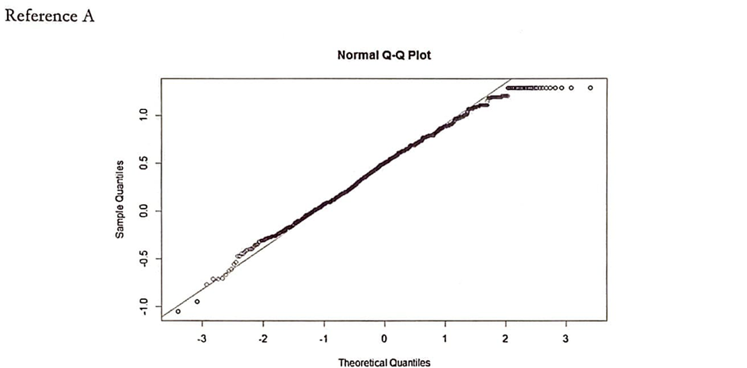
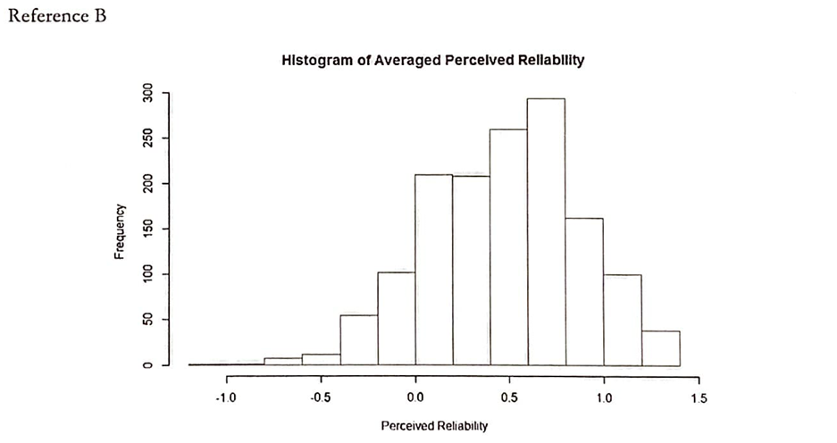
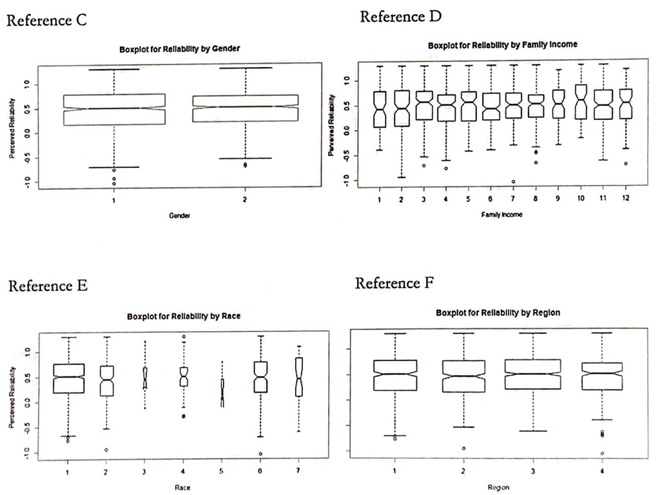
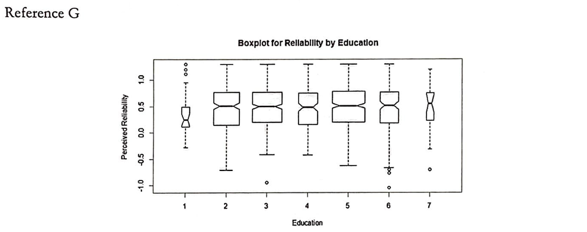
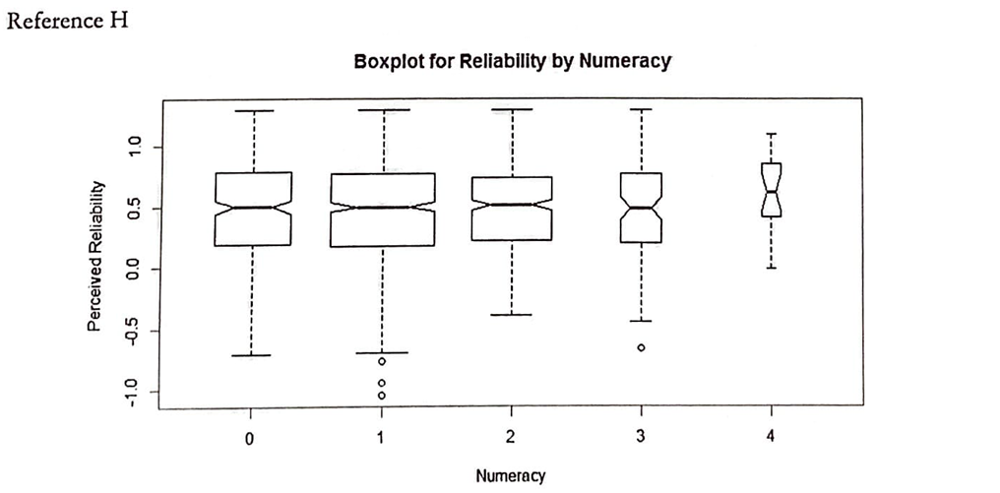
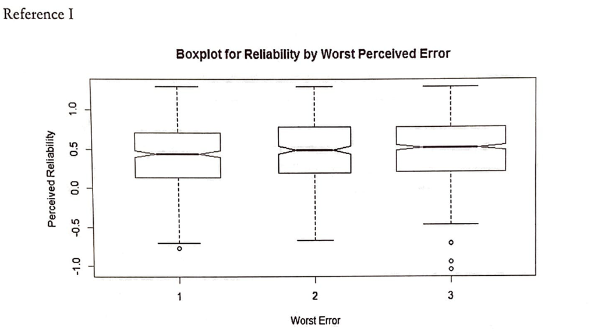
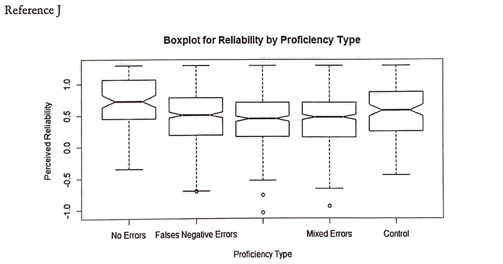
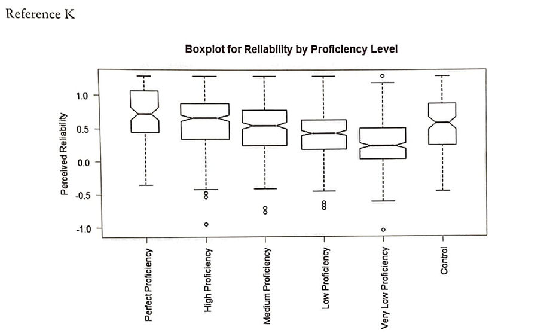
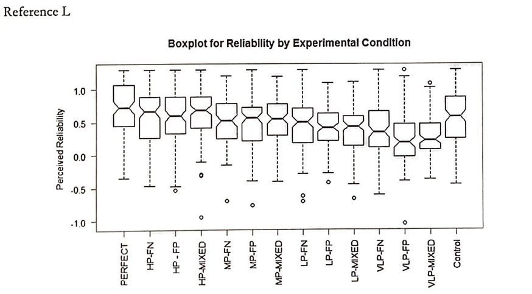

Perceived Reliability of Fingerprint Evidence
Fingerprints are considered to be critical evidence -what undermines such beliefs?
Summary
During many criminal cases, forensic evidence gathered by crime scene investigators and evaluated by a proficient examiner plays a critical role. Fingerprint impressions, among numerous types of forensic evidence, are the most common type used to link individuals to specific crimes. A proper understanding of how a juror may interpret a presentation of given evidence is critical in the strengthening of the current judicial system.
Analysis of the client (Prof. Brandon Garrett) dataset uncovered interesting results. Statistical modeling and tests support that, when presented with examiner evaluations, jurors' responses vary significantly. That is, the perceived reliability of evidence examined by examiners with a low error rate is statistically significantly higher than those from examiners with a high error rate. However, interestingly, the type of error that the examiner has made [false positive, false negative, or mixed] did not have a significant effect on the perceived reliability.
Introduction
In the previous study conducted with the client, it was found that the particular phrase chosen to describe the finding on a fingerprint match had little effect on participants' judgments about the guilt of a suspect. However, the examiner admitting the possibility of error reduced the weight given to the fingerprint evidence.
In this study, a convenient sample of individuals was provided with one of the 14 different situations: Control, Perfect, and High/Medium/Low/VeryLow proficiency levels, each with 3 types of errors - False Positive, False Negative, and Mixed Errors. Afterward, they were asked to answer a set of questions designed to determine their perception of the reliability of the fingerprint evidence.
For this study, data on over 1450 individuals were collected. Each individual is asked to provide background information including the Previous Service as a Jury, Gender, Race/Ethnicity, Age, Income, Education Level, Political View, and Region/Location of Residence. They are then asked to complete a simple, 4-question numeracy test, after which they are given any one of the evaluator scores. The information collected, along with the situation they were given and the constructed perceived reliability scores were used for statistical analysis and tests found in this study.
The primary objective of this study is to determine the effects of the examiner's proficiency scores on the perceived reliability of fingerprint evidence. The secondary objective is to detect other potentially significant variables that may impact juror's perceived reliability - the main variables of interest included Numeracy [ranging from 0 to 4], Worst Perceived Error [choice between "false positive is worse", "false negative is worse", or "they are equally bad"] and Proficiency Types [assigned one of "false positive", "false negative", and "mixed"].
Approaches and Results
The questions that inquired the individual's personal stance on the reliability of the fingerprint evidence were used to create an aggregated normalized score. Reference A, the QQplot of the scores, was used to check the normality of the scores. As expected, the QQPlot follows a straight line, proving the normal distribution. Similarly, the histogram of average perceived reliability (Reference B) was plotted to visualize the spread of the perceived reliability scores.
 Before the references below are introduced, it is appropriate to introduce the concept of Notched Box Plots. As is standard in boxplots, the box describes the interquartile range (IQR; 25 to 75 percentile) with the line showing the median of the data. The notch displays a 95% confidence interval of the median. While not a formal statistical test, if two boxes' notches do not overlap, there is strong evidence (at the 95% confidence level) that their medians differ.
Following references, Reference C through F, display boxplot concerning the effects of Gender, Family Income, Region, and Race on Perceived Reliability. As can be observed, it is difficult to assume that the variables presenced in Reference C through F are significant. An interesting observation to note is that the Family Income plot (Reference D) shows relatively consistent population distribution among all income levels, which is not representative of the actual population of the United States.
Boxplot of Reliability of Education (Reference G) displays a significant difference between Group 1 (less than high school level education) and Group 2 through 7, which have higher levels of education in increasing order. However, considering the likelihood of individuals with less than high school level education serving as a juror along with the low frequency of the sample (26 out of 1448 individuals that responded to the question), it is difficult to say that the results found in the plot are statistically significant.
Numeracy, found in Reference H, did not impact the perceived reliability. However, note that this simply means that the hypothesis that states that numeracy did indeed impact the reliability scores could not be supported with the given data. It does not indicate that numeracy has no impact on the reliability scores. To prove the effect of numeracy (or lack thereof), a more thorough and focused study is recommended.
The relatively low frequency of those who scored perfect on the four-question numeracy test is also alarming. It may speak to how the convenient sample that was collected may not be taking this test seriously, weakening the observations that were found in this study.
The Boxplot for Reliability by Worst Perceived Error (Reference I) shows that the juror's view on whether the false positive or false negative errors (or neither) are worse does not impact the perceived reliability scores.
The reliability scores from all examiner proficiency levels were combined under their respective proficiency types - False Positive, False Negative, and Mixed- along with scores from the Perfect (No Error) and Control conditions. The boxplot for the reliability type (Reference J) reveals that, as previously found, there is no significant difference between the three error types. This plot stands to show that public opinion differs greatly from how the judicial system is designed, which weighs false-positive outcomes far worse than false-negative outcomes.
Most significantly, Reference K, the Boxplot for Reliability by Proficiency Level, indicates that there is a significantly different perceived reliability according to the examiner's proficiency level. The general public and thus the jury and less likely to trust the fingerprint evidence if the revealed proficiency of the examiner is low.
Reference L displays both the proficiency level and the proficiency type to show an overarching trend.
Finally, a One-Way Analysis of Variance (Reference M) was conducted to further support the conclusion found in Reference K. The low p-value of the Proficiency Level, at less than 2e-16, shows that proficiency level is indeed a statistically significant variable.
Conclusion
It was found that while many variables did not significantly affect the reliability scores (the individual's perception of the reliability of the fingerprint evidence), the main variable regarding the examiner's proficiency level did indeed have a statistically significant influence.
However, it would be remiss to discard the concerns regarding the convenient sampling yet exist. Especially looking at the considerable gap between conducting surveys in the comfort of home over the internet compared to serving at a court as a juror, it is difficult to say that all the observations can be fully trusted.